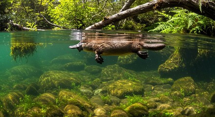
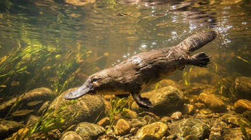
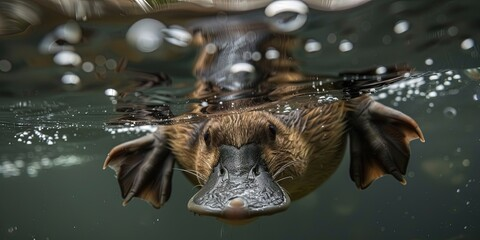

Where it lives
The platypus is endemic to eastern Australia — found only where freshwater meets dense riverbank vegetation. It is a semi-aquatic specialist: a creature of margins, burrows, and cold, clean streams.
Range: Queensland → Victoria → Tasmania · Elevation: sea level to 1,000 m

Rainforest stream, Queensland — via uploaded collectionFrom the Atherton Tablelands south through the coastal ranges, platypuses inhabit the cool, shaded waterways fed by Queensland's highland rainforests. The Daintree catchment and Carnarvon Gorge represent the northern and western edges of their continental range. Here, dense riparian vegetation provides ideal burrowing sites along steep clay banks.

Freshwater creek, Victoria — via uploaded collectionThe Murray-Darling basin, the rivers of the Great Dividing Range, and the cool streams of the Victorian highlands form the core of platypus territory. Healesville, Tidbinbilla, and the upper Murrumbidgee are among the most reliably sighted locations on the continent. Cool, clear water with abundant invertebrate prey — shrimp, yabbies, insect larvae — defines the ideal conditions.

Creek habitat, eastern Australia — via uploaded collectionTasmania harbours some of the most intact platypus habitat on Earth. The island's relatively undisturbed river systems — including the Arthur, Huon, and Derwent — run cold and clean through temperate rainforest. Tasmanian platypuses tend to be larger than their mainland counterparts, an adaptation to the colder climate, and populations here are considered among the most stable.
Reduced rainfall and prolonged drought events lower stream flows, concentrating platypuses in smaller refuges and increasing competition and predation risk.
Agriculture and development strip riparian vegetation, destabilising banks used for burrows and increasing sediment loads that smother invertebrate prey.
River regulation alters flow regimes and water temperatures, fragmenting populations and reducing the cold, well-oxygenated conditions platypuses require.
Discarded fishing line, yabby traps, and plastic debris cause drowning; agricultural and urban runoff degrades water quality and depletes food sources.